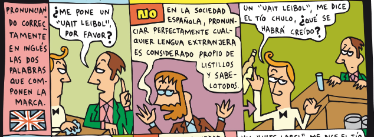
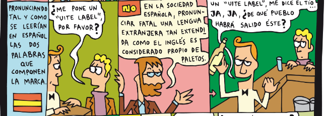
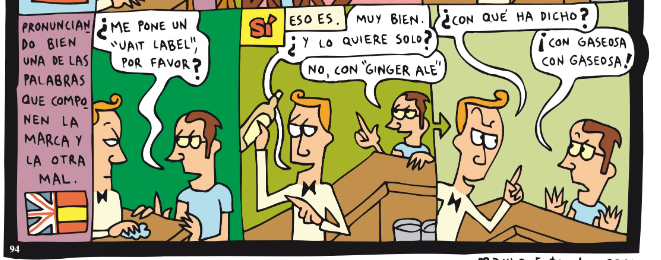

<!DOCTYPE html>
<html lang="en">
  <head>
    <meta charset="utf-8" />
    <meta name="viewport" content="width=device-width, initial-scale=1.0, maximum-scale=1.0, user-scalable=no" />

    <title></title>
    <link rel="stylesheet" href="dist/reveal.css" />
    <link rel="stylesheet" href="dist/theme/solarized.css" id="theme" />
    <link rel="stylesheet" href="plugin/highlight/zenburn.css" />
	<link rel="stylesheet" href="css/layout.css" />
	<link rel="stylesheet" href="plugin/customcontrols/style.css">


    <script defer src="dist/fontawesome/all.min.js"></script>

	<script type="text/javascript">
		var forgetPop = true;
		function onPopState(event) {
			if(forgetPop){
				forgetPop = false;
			} else {
				parent.postMessage(event.target.location.href, "app://obsidian.md");
			}
        }
		window.onpopstate = onPopState;
		window.onmessage = event => {
			if(event.data == "reload"){
				window.document.location.reload();
			}
			forgetPop = true;
		}

		function fitElements(){
			const itemsToFit = document.getElementsByClassName('fitText');
			for (const item in itemsToFit) {
				if (Object.hasOwnProperty.call(itemsToFit, item)) {
					var element = itemsToFit[item];
					fitElement(element,1, 1000);
					element.classList.remove('fitText');
				}
			}
		}

		function fitElement(element, start, end){

			let size = (end + start) / 2;
			element.style.fontSize = `${size}px`;

			if(Math.abs(start - end) < 1){
				while(element.scrollHeight > element.offsetHeight){
					size--;
					element.style.fontSize = `${size}px`;
				}
				return;
			}

			if(element.scrollHeight > element.offsetHeight){
				fitElement(element, start, size);
			} else {
				fitElement(element, size, end);
			}		
		}


		document.onreadystatechange = () => {
			fitElements();
			if (document.readyState === 'complete') {
				if (window.location.href.indexOf("?export") != -1){
					parent.postMessage(event.target.location.href, "app://obsidian.md");
				}
				if (window.location.href.indexOf("print-pdf") != -1){
					let stateCheck = setInterval(() => {
						clearInterval(stateCheck);
						window.print();
					}, 250);
				}
			}
	};


        </script>
  </head>
  <body>
    <div class="reveal">
      <div class="slides"><section  data-markdown><script type="text/template"><!-- .slide: class="drop" data-background-image="Adjuntos/slides.eap.portada.png" -->
<div class="" style="position: absolute; left: 0px; top: 0px; height: 700px; width: 960px; min-height: 700px; display: flex; flex-direction: column; align-items: center; justify-content: center" absolute="true">

# Testing
</div></script></section><section  data-markdown><script type="text/template"><!-- .slide: class="drop" data-background-image="Adjuntos/slides.eap.png" -->
<div class="" style="position: absolute; left: 0px; top: 0px; height: 700px; width: 960px; min-height: 700px; display: flex; flex-direction: column; align-items: center; justify-content: center" absolute="true">

# Raul Tierno
## @raultm
### ¿Quién soy?
</div></script></section><section  data-markdown><script type="text/template"><!-- .slide: class="drop" -->
<div class="" style="position: absolute; left: 0px; top: 0px; height: 700px; width: 960px; min-height: 700px; display: flex; flex-direction: column; align-items: center; justify-content: center" absolute="true">

# Desarrollador

## Junta de Extremadura
</div>

<aside class="notes"><p>Terminé la carrera en Sevilla en 2009 y desde entonces trabajando con máquinas.</p>
<p>Desarrollador/Sysadmin
PHP, Cake, android, Java, javascript, Laravel, linux, macos,</p>
<p>Profe
Android, Laravel y ahora parece que Java</p>
<!-- .slide: data-background-image="Adjuntos/slides.eap.png" --></aside></script></section><section  data-markdown><script type="text/template"><!-- .slide: class="drop" data-background-image="Adjuntos/slides.eap.png" -->
<div class="" style="position: absolute; left: 0px; top: 0px; height: 700px; width: 960px; min-height: 700px; display: flex; flex-direction: column; align-items: center; justify-content: center" absolute="true">

# Curso

- Desarrollo Proyectos (Visión Propia)
- Testing (Tipos/Niveles/Herramientas/TDD)
- Testing (Java/Springboot)
- Visual Studio Code (VS Code)
- Práctico (en la medida de lo posible)
- Conceptos con asociaciones del mundo real
</div></script></section><section  data-markdown><script type="text/template"><!-- .slide: class="drop" -->
<div class="" style="position: absolute; left: 0px; top: 0px; height: 700px; width: 960px; min-height: 700px; display: flex; flex-direction: column; align-items: center; justify-content: center" absolute="true">

# Desarrollo de Proyectos
</div>

<aside class="notes"><p>Nuestro proyecto nuevo existe mucha ilusión, hay esfuerzo dedicado a entender el problema y buscar soluciones. Realizas el proyecto de la mejor manera que sabes.</p>
<p>Lo entregas al cliente para que lo pruebes, resuelves los bugs que puedas encontrar y lo dejas correr libre. </p>
<p>Satisfacción.</p>
<p>ref: Sandi Metz - Go ahead, make a mess</p>
<p><a href="https://speakerdeck.com/skmetz/go-ahead-make-a-mess?slide=2">https://speakerdeck.com/skmetz/go-ahead-make-a-mess?slide=2</a></p>
<p><a href="https://youtu.be/mpA2F1In41w?si=09SjrhhtF_vQ2MlM&amp;t">https://youtu.be/mpA2F1In41w?si=09SjrhhtF_vQ2MlM&amp;t</a>                                       ion and the somebody asks for a change</p>
<!-- .slide: data-background-image="Adjuntos/slides.eap.png" --></aside></script></section><section  data-markdown><script type="text/template"><!-- .slide: class="drop" data-background-image="Adjuntos/deployment.happiness.jpg" -->
<div class="" style="position: absolute; left: 0px; top: 0px; height: 700px; width: 960px; min-height: 700px; display: flex; flex-direction: column; align-items: center; justify-content: center" absolute="true">


</div>

<aside class="notes"><p><a href="https://unsplash.com/photos/man-in-black-framed-eyeglasses-doing-peace-sign-8IJ5xNTv1QM">https://unsplash.com/photos/man-in-black-framed-eyeglasses-doing-peace-sign-8IJ5xNTv1QM</a></p>
</aside></script></section><section  data-markdown><script type="text/template"><!-- .slide: class="drop" data-background-image="Adjuntos/metz_satisfaction_01_beta.png" -->
<div class="" style="position: absolute; left: 0px; top: 0px; height: 700px; width: 960px; min-height: 700px; display: flex; flex-direction: column; align-items: center; justify-content: center" absolute="true">


</div>

<aside class="notes"><p>Si todo funciona como es debido el proyecto tiene éxito y ese éxito viene acompañado, como no, por peticiones de nuevas funcionalidades.</p>
<p>Desarrollas la funcionalidad tocando código aquí y allá, la compruebas y la despliegas.</p>
<p>Los cambios siguen viniendo en el barullo del día a día, a veces puedes dedicar más tiempo y otras, pues menos.</p>
<p>Te piden     cionalidades que no entraban en tus diseños de la aplicación, además ese día tiene más jaleo y realizas un desarrollo para salir del paso.</p>
<p>Este proceso iterativo se va repitiendo hasta que abres el proyecto un día y aquella aplicación que habías realizado con tanto cariño en dejarla bonita y que te daba una satisfacción resulta que se ha convertido en uno de tus mayores odios. Odias e                                                                                            mejor es dejarlo todo irte a trabajar un huerto</p>
</aside></script></section><section  data-markdown><script type="text/template"><!-- .slide: class="drop" data-background-image="Adjuntos/customers.happy.jpg" -->
<div class="" style="position: absolute; left: 0px; top: 0px; height: 700px; width: 960px; min-height: 700px; display: flex; flex-direction: column; align-items: center; justify-content: center" absolute="true">


</div>

<aside class="notes"><p><a href="https://unsplash.com/photos/men-and-women-sitting-and-standing-while-staring-at-laptop-p74ndnYWRY4">https://unsplash.com/photos/men-and-women-sitting-and-standing-while-staring-at-laptop-p74ndnYWRY4</a></p>
</aside></script></section><section  data-markdown><script type="text/template"><!-- .slide: class="drop" data-background-image="Adjuntos/metz_satisfaction_02_full_cycle.png" -->
<div class="" style="position: absolute; left: 0px; top: 0px; height: 700px; width: 960px; min-height: 700px; display: flex; flex-direction: column; align-items: center; justify-content: center" absolute="true">


</div>

<aside class="notes"><p>No estás solo</p>
<p>El diseño que te has hecho es bueno pero a medida que los cambios no pensados vienen, empiezan a emerger problemas que no habías tenido en cuenta porque, básicamente, no existían</p>
<p>Pero es que además somos humano y si no afrontamos el problema lo que pasa es que volvemos a repetir la misma historia</p>
</aside></script></section><section  data-markdown><script type="text/template"><!-- .slide: class="drop" data-background-image="Adjuntos/metz_satisfaction_03_two_cycles.png" -->
<div class="" style="position: absolute; left: 0px; top: 0px; height: 700px; width: 960px; min-height: 700px; display: flex; flex-direction: column; align-items: center; justify-content: center" absolute="true">


</div></script></section><section  data-markdown><script type="text/template"><!-- .slide: class="drop" data-background-image="Adjuntos/metz_satisfaction_04_three_cycles.png" -->
<div class="" style="position: absolute; left: 0px; top: 0px; height: 700px; width: 960px; min-height: 700px; display: flex; flex-direction: column; align-items: center; justify-content: center" absolute="true">


</div>

<aside class="notes"><p>Si consigues detectar y separar las cosas estables de las inestables y gestionas correctamente esas dependencias mejoraras mucho la gestión de la satisfacción.</p>
<p>Para conseguir eso necesitas herramientas.</p>
<p>Nuestro objetivo es que en un proyecto la satisfacción venga a ser algo parecido a...</p>
</aside></script></section><section  data-markdown><script type="text/template"><!-- .slide: class="drop" data-background-image="Adjuntos/giphy.blame.algorithm.gif" -->
<div class="" style="position: absolute; left: 0px; top: 0px; height: 700px; width: 960px; min-height: 700px; display: flex; flex-direction: column; align-items: center; justify-content: center" absolute="true">


</div>

<aside class="notes"><p>bg de blame</p>
</aside></script></section><section  data-markdown><script type="text/template"><!-- .slide: class="drop" data-background-image="Adjuntos/metz_satisfaction_05_expected.png" -->
<div class="" style="position: absolute; left: 0px; top: 0px; height: 700px; width: 960px; min-height: 700px; display: flex; flex-direction: column; align-items: center; justify-content: center" absolute="true">


</div></script></section><section  data-markdown><script type="text/template"><!-- .slide: class="drop" -->
<div class="" style="position: absolute; left: 0px; top: 0px; height: 700px; width: 960px; min-height: 700px; display: flex; flex-direction: column; align-items: center; justify-content: center" absolute="true">

Bases para la 

# Orientación a Objetos
</div>

<aside class="notes"><p>baso mi railes en 4 conceptos</p>
<ul>
<li>diseño </li>
<li>SOLID</li>
<li>tests</li>
<li>refactoring</li>
</ul>
<!-- .slide: data-background-image="Adjuntos/slides.eap.png" --></aside></script></section><section  data-markdown><script type="text/template"><!-- .slide: class="drop" data-background-image="Adjuntos/slides.eap.png" -->
<div class="" style="position: absolute; left: 0px; top: 0px; height: 700px; width: 960px; min-height: 700px; display: flex; flex-direction: column; align-items: center; justify-content: center" absolute="true">

# Diseño
</div></script></section><section  data-markdown><script type="text/template"><!-- .slide: class="drop" data-background-image="Adjuntos/diseño.webp" -->
<div class="" style="position: absolute; left: 0px; top: 0px; height: 700px; width: 960px; min-height: 700px; display: flex; flex-direction: column; align-items: center; justify-content: center" absolute="true">


</div>

<aside class="notes"><p>bg de diseño</p>
<p>Esto es lo que se nos viene a la mente</p>
<p><a href="https://unsplash.com/s/photos/meeting-people">https://unsplash.com/s/photos/meeting-people</a>
<a href="https://unsplash.com/s/photos/agreement">https://unsplash.com/s/photos/agreement</a></p>
</aside></script></section><section  data-markdown><script type="text/template"><!-- .slide: class="drop" data-background-image="Adjuntos/meme_muromalhecho.jpg" -->
<div class="" style="position: absolute; left: 0px; top: 0px; height: 700px; width: 960px; min-height: 700px; display: flex; flex-direction: column; align-items: center; justify-content: center" absolute="true">


</div>

<aside class="notes"><p>pero tambien puede ser esto</p>
</aside></script></section><section  data-markdown><script type="text/template"><!-- .slide: class="drop" -->
<div class="" style="position: absolute; left: 0px; top: 0px; height: 700px; width: 960px; min-height: 700px; display: flex; flex-direction: column; align-items: center; justify-content: center" absolute="true">

El **diseño** es el proceso que precede a la 

búsqueda de soluciones para que un producto resulte 

**UTIL**

**ATRACTIVO**
</div>

<aside class="notes"><p>El <strong>diseño</strong> es el proceso de configuración mental preliminar, o «prefiguración», que precede a la búsqueda de soluciones para que un producto resulte útil y atractivo.
Diseño en wikipedia.</p>
<p>Etimologia de designio o lo que esta por venir
<a href="https://es.wikipedia.org/wiki/Dise%C3%B1o">https://es.wikipedia.org/wiki/Dise%C3%B1o</a></p>
<p>en desarrollo diferentes niveles de diseño que podemos comparar con la Arquitectura</p>
<!-- .slide: data-background-image="Adjuntos/slides.eap.png" --></aside></script></section><section  data-markdown><script type="text/template"><!-- .slide: class="drop" data-background-image="Adjuntos/slides.eap.png" -->
<div class="" style="position: absolute; left: 0px; top: 0px; height: 700px; width: 960px; min-height: 700px; display: flex; flex-direction: column; align-items: center; justify-content: center" absolute="true">

# Diseño


| Arquitectura | Software         |
| -----        | ----             |
| Ciudad       | Sistema Complejo |
| Edificio     |  Aplicación      |
| Habitación   | Clase            |
</div>

<aside class="notes"><p>Un Sistema Complejo es un conjunto de aplicaciones que interactuan entre ellas</p>
</aside></script></section><section  data-markdown><script type="text/template"><!-- .slide: class="drop" -->
<div class="" style="position: absolute; left: 0px; top: 0px; height: 700px; width: 960px; min-height: 700px; display: flex; flex-direction: column; align-items: center; justify-content: center" absolute="true">

# Objetivos

facilitar lo que quieres que se haga 

dificultar lo que no quieres que se haga
</div>

<aside class="notes"><p>En una habitación cuando el arquitecto pone los enchufes en unos sitios concretos ya está decidiendo donde debes poner la cama, la tele, las mesitas de noche.</p>
<p>¿Tú puedes ponerlo donde quieras?
Sí, pero te obliga a usar alargadores o abrir rozas para cambiar la configuración</p>
<p>En el patrón MVC sabes donde van los controladores o lo modelos y lo que hacen, una decisión tomada que es coherente y es fácil mantener la consistencia</p>
<!-- .slide: data-background-image="Adjuntos/slides.eap.png" --></aside></script></section><section  data-markdown><script type="text/template"><!-- .slide: class="drop" data-background-image="Adjuntos/testing.dormitorio.jpg" -->
<div class="" style="position: absolute; left: 0px; top: 0px; height: 700px; width: 960px; min-height: 700px; display: flex; flex-direction: column; align-items: center; justify-content: center" absolute="true">


</div></script></section><section  data-markdown><script type="text/template"><!-- .slide: class="drop" -->
<div class="" style="position: absolute; left: 0px; top: 0px; height: 700px; width: 960px; min-height: 700px; display: flex; flex-direction: column; align-items: center; justify-content: center" absolute="true">

# Esfuerzo

**¿Merece la pena?**


</div>

<aside class="notes"><p>Pues depende.  Si la actividad a resolver va tener que mantenerse en el tiempo sobre cambios la experiencia nos dice que si.</p>
<p>Si la actividad en cuestión no va a ser modificada quizás una primera aproximación sin mucho diseño nos valga la pena, el problema es que no sabemos cual de las dos van a ser nuestras decisiones.</p>
<p>Aplicacion para un rato que se tiran lustros en los servidores, y aplicacion con planes a largo plazo que van a la basura antes de desplegar.</p>
<p>SobreIngenieria vs subingenieria o infraingenieria.</p>
<p><strong>Is it worth the effort to design software well?</strong>
Merece la pena diseñar correctamente el software?
<a href="https://martinfowler.com/bliki/DesignStaminaHypothesis.html">https://martinfowler.com/bliki/DesignStaminaHypothesis.html</a></p>
<!-- .slide: data-background-image="Adjuntos/slides.eap.png" --></aside></script></section><section  data-markdown><script type="text/template"><!-- .slide: class="drop" data-background-image="Adjuntos/slides.eap.png" -->
<div class="" style="position: absolute; left: 0px; top: 0px; height: 700px; width: 960px; min-height: 700px; display: flex; flex-direction: column; align-items: center; justify-content: center" absolute="true">

## Principios
# SOLID
</div></script></section><section  data-markdown><script type="text/template"><!-- .slide: class="drop" -->
<div class="" style="position: absolute; left: 0px; top: 0px; height: 700px; width: 960px; min-height: 700px; display: flex; flex-direction: column; align-items: center; justify-content: center" absolute="true">

- Single Responsibility
- &shy;<!-- .element: class="fragment" data-fragment-index="1" -->Open/Close
- &shy;<!-- .element: class="fragment" data-fragment-index="2" -->Liskov Sustitution
- &shy;<!-- .element: class="fragment" data-fragment-index="3" -->Interface Segregation
- &shy;<!-- .element: class="fragment" data-fragment-index="4" -->Dependency Injection
</div>

<aside class="notes"><table>
<thead>
<tr>
<th>Inicial</th>
<th>Acrónimo</th>
<th>Concepto</th>
</tr>
</thead>
<tbody><tr>
<td>S</td>
<td>SRP</td>
<td><a href="https://es.wikipedia.org/wiki/Principio_de_responsabilidad_%C3%BAnica" title="Principio de responsabilidad única">Principio de responsabilidad única</a> (<em>Single responsibility principle</em>)<br><br>la noción de que un <a href="https://es.wikipedia.org/wiki/Objeto_(programaci%C3%B3n)" title="Objeto (programación)">objeto</a> solo debería tener una única razón para cambiar.</td>
</tr>
<tr>
<td>O</td>
<td>OCP</td>
<td><a href="https://es.wikipedia.org/wiki/Principio_de_abierto/cerrado" title="Principio de abierto/cerrado">Principio de abierto/cerrado</a> (<em>Open/closed principle</em>)<br><br>la noción de que las “entidades de software … deben estar abiertas para su extensión, pero cerradas para su modificación”.</td>
</tr>
<tr>
<td>L</td>
<td>LSP</td>
<td><a href="https://es.wikipedia.org/wiki/Principio_de_sustituci%C3%B3n_de_Liskov" title="Principio de sustitución de Liskov">Principio de sustitución de Liskov</a> (<em>Liskov substitution principle</em>)<br><br>la noción de que los “objetos de un programa deberían ser reemplazables por instancias de sus subtipos sin alterar el correcto funcionamiento del programa”. Véase también <a href="https://es.wikipedia.org/wiki/Dise%C3%B1o_por_contrato" title="Diseño por contrato">diseño por contrato</a>.</td>
</tr>
<tr>
<td>I</td>
<td>ISP</td>
<td><a href="https://es.wikipedia.org/wiki/Principio_de_segregaci%C3%B3n_de_la_interfaz" title="Principio de segregación de la interfaz">Principio de segregación de la interfaz</a> (<em>Interface segregation principle</em>)<br><br>la noción de que “muchas interfaces cliente específicas son mejores que una interfaz de propósito general”.<a href="https://es.wikipedia.org/wiki/SOLID#cite_note-martin-design-principles-4">4</a>​</td>
</tr>
<tr>
<td>D</td>
<td>DIP</td>
<td><a href="https://es.wikipedia.org/wiki/Principio_de_inversi%C3%B3n_de_la_dependencia" title="Principio de inversión de la dependencia">Principio de inversión de la dependencia</a> (<em>Dependency inversion principle</em>)<br><br>la noción de que se debe “depender de abstracciones, no depender de implementaciones”.<a href="https://es.wikipedia.org/wiki/SOLID#cite_note-martin-design-principles-4">4</a>​  <br>La <a href="https://es.wikipedia.org/wiki/Inyecci%C3%B3n_de_Dependencias" title="Inyección de Dependencias">Inyección de Dependencias</a> es uno de los métodos que siguen este principio.</td>
</tr>
</tbody></table>
<!-- .slide: data-background-image="Adjuntos/slides.eap.png" --></aside></script></section><section  data-markdown><script type="text/template"><!-- .slide: class="drop" data-background-image="Adjuntos/slides.eap.png" -->
<div class="" style="position: absolute; left: 0px; top: 0px; height: 700px; width: 960px; min-height: 700px; display: flex; flex-direction: column; align-items: center; justify-content: center" absolute="true">

- Single Responsibility
- <mark>Open/Close</mark>
- Liskov Sustitution
- Interface Segregation
- Dependency Injection
</div></script></section><section  data-markdown><script type="text/template"><!-- .slide: class="drop" -->
<div class="" style="position: absolute; left: 0px; top: 0px; height: 700px; width: 960px; min-height: 700px; display: flex; flex-direction: column; align-items: center; justify-content: center" absolute="true">

## Single Responsibility

Medicina

Fútbol
</div>

<aside class="notes"><p>si te tienen que operar del corazon, prefieres un cirujano que lo hace todos los dias o un fisio que se dedica a rehabilitaciones o un médico de atención primaria</p>
<p>En el mundo real además afectan otras cosas, te gusta conocer a la eprsona para saber si está en un buen día, si es un sicopata pero aun asi...</p>
<p>Para tirar un penalti en una final a quien eliges</p>
<p><strong>Single Responsibility</strong>: Cualquier medico debe saber de todo pero queremos un especialista.
<strong>Open/Close</strong>: Si tu defines las tareas de un perfil, cualquier que cumpla esas tareas puede añadirse al listado. 
<strong>Liskov</strong>: Diferentes medicamente con mismo principio activo, distintos nombres pero hacen lo mismo
<strong>Interface Segregation</strong>: Es preferible tener una interfaz por cada especialidad médica, que una interfaz genérica Médico que involucre. Gestion de historial, Investigación, Atención Primaria, Atención pediatrica, Cardiologia, Oncología
<strong>Dependency Injection</strong>: Al dirigir un hospital lo ideal es que te pasen un listados de gente para cada puesto. Puedes hacer cuadrantes o lo que quieras, si una persona cambia tus direcciones siguen siendo las mismas al no depender de las personas concretas.</p>
<!-- .slide: data-background-image="Adjuntos/slides.eap.png" --></aside></script></section><section  data-markdown><script type="text/template"><!-- .slide: class="drop" -->
<div class="" style="position: absolute; left: 0px; top: 0px; height: 700px; width: 960px; min-height: 700px; display: flex; flex-direction: column; align-items: center; justify-content: center" absolute="true">

## Liskov Sustitution

Medicina

Fútbol
</div>

<aside class="notes"><p>los objetos de un programa deberían ser reemplazables por instancias de sus subtipos sin alterar el correcto funcionamiento del programa</p>
<p>PersonalHospitalario
-&gt; Medico
-&gt; Enfermero
-&gt; Limpiador</p>
<p>si tenemos en personal hospitalario un metodo llamada atenderPaciente el contexto donde se llame va a ser importante.</p>
<p>Si hacemos una clase generica Jugador</p>
<p>Si en nuestro partido de futbol hay que tirar un penalti ¿se puede intercambiar por un jugador de futbol americano? ¿El objetivo es distinto? </p>
<p>Quizás poner a Sergio Ramos tirar un penalti de rugby sea garantía de calidad pero es raro.</p>
<p>Para estos trabajamos con interfaces y para ellos nos recomiendan...</p>
<p><a href="https://stg-tud.github.io/sedc/Lecture/ws13-14/3.3-LSP.html#mode=document">https://stg-tud.github.io/sedc/Lecture/ws13-14/3.3-LSP.html#mode=document</a>
Rectangulo y Cuadrado
Shape - &gt; Rectangle | Square</p>
<!-- .slide: data-background-image="Adjuntos/slides.eap.png" --></aside></script></section><section  data-markdown><script type="text/template"><!-- .slide: class="drop" -->
<div class="" style="position: absolute; left: 0px; top: 0px; height: 700px; width: 960px; min-height: 700px; display: flex; flex-direction: column; align-items: center; justify-content: center" absolute="true">

## Interface Segregation

Medicina

Fútbol
</div>

<aside class="notes"><p>en vez de tener unas interfaces/clases genericas Medico/Jugador o tener interfaces concretas Cirujano/Cardiologo/Fisio/Pediatra, Portero/Defensa/Delantero</p>
<!-- .slide: data-background-image="Adjuntos/slides.eap.png" --></aside></script></section><section  data-markdown><script type="text/template"><!-- .slide: class="drop" -->
<div class="" style="position: absolute; left: 0px; top: 0px; height: 700px; width: 960px; min-height: 700px; display: flex; flex-direction: column; align-items: center; justify-content: center" absolute="true">

## Dependency Injection

Medicina

Fútbol
</div>

<aside class="notes"><p>montar un hospital con los compañeros y formarlos en cada especialidad o saber qué necesitas y buscar gente que pueda trabajar esos perfiles</p>
<p>tener unas estrategias con unos perfiles concretos o hacer un equipo alrededor de los jugadores, si tienes a Messi, CR7, </p>
<!-- .slide: data-background-image="Adjuntos/slides.eap.png" --></aside></script></section><section  data-markdown><script type="text/template"><!-- .slide: class="drop" -->
<div class="" style="position: absolute; left: 0px; top: 0px; height: 700px; width: 960px; min-height: 700px; display: flex; flex-direction: column; align-items: center; justify-content: center" absolute="true">

## Open / Close

Medicina

Fútbol
</div>

<aside class="notes"><p>Tanto en un hospital como en un equipo tienes una serie de procedimiento o estrategias.</p>
<p>Lo ideal es que tengas unas estrategias que te funcionen mientras haya alguien que pueda hacer el papel(interfaz)</p>
<p>La estrategia no hace falta que la modifiques en función de quien te llegue, si acaso lo podrá hacer la estrategia es evolucionar en sí misma por nuevas funcionalidades.</p>
<!-- .slide: data-background-image="Adjuntos/slides.eap.png" --></aside></script></section><section  data-markdown><script type="text/template"><!-- .slide: class="drop" -->
<div class="" style="position: absolute; left: 0px; top: 0px; height: 700px; width: 960px; min-height: 700px; display: flex; flex-direction: column; align-items: center; justify-content: center" absolute="true">

# Testing
</div>

<aside class="notes"><p>todos hacemos testing, pero lo que no podemos hacer es realizar todas las pruebas que hacemos con cualquier feature reproducirlos cuando hacemos otra funcionalidad.</p>
<p>Necesitamos que la máquina se encargue de verificar que el proyecto en conjunto o por piezas separadas haga lo que queremos que haga</p>
<!-- .slide: data-background-image="Adjuntos/slides.eap.png" --></aside></script></section><section  data-markdown><script type="text/template"><!-- .slide: class="drop" -->
<div class="" style="position: absolute; left: 0px; top: 0px; height: 700px; width: 960px; min-height: 700px; display: flex; flex-direction: column; align-items: center; justify-content: center" absolute="true">

# Testing

Muchos tipos, herramientas, incongruencias.
</div>

<aside class="notes"><p>incongruencias entre distintas comunidades de testing, croe que es principalmente por la cultura de cada lenguaje</p>
<!-- .slide: data-background-image="Adjuntos/slides.eap.png" --></aside></script></section><section  data-markdown><script type="text/template"><!-- .slide: class="drop" data-background-image="Adjuntos/slides.eap.png" -->
<div class="" style="position: absolute; left: 0px; top: 0px; height: 700px; width: 960px; min-height: 700px; display: flex; flex-direction: column; align-items: center; justify-content: center" absolute="true">

# Testing

Principal diferencia entre testing manual y...
</div></script></section><section  data-markdown><script type="text/template"><!-- .slide: class="drop" -->
<div class="" style="position: absolute; left: 0px; top: 0px; height: 700px; width: 960px; min-height: 700px; display: flex; flex-direction: column; align-items: center; justify-content: center" absolute="true">

# Testing
# <mark>Automatizado</mark>
</div>

<aside class="notes"><p>siguiendo los principios SOLID, destacando la Inyección de Dependencias esto se hace mucho más fácil.</p>
<!-- .slide: data-background-image="Adjuntos/slides.eap.png" --></aside></script></section><section  data-markdown><script type="text/template"><!-- .slide: class="drop" -->
<div class="" style="position: absolute; left: 0px; top: 0px; height: 700px; width: 960px; min-height: 700px; display: flex; flex-direction: column; align-items: center; justify-content: center" absolute="true">

# Testing

Libre de Carga Mental
</div>

<aside class="notes"><p>cuando estas desarrollando sueles tener la aplicación en la cabeza, sin que te des cuenta vas pasando por camino y comprobando cosas que puede ir mal.</p>
<p>¿Qué pasa cuando la aplicación es tan grande que ya no te cabe en la cabeza?
¿Qué pasa cuando hace meses que no tocas la aplicación y ahora te piden algo nuevo?</p>
<p>Esa fricción con la aplicación se reduce, puedes probar cosas sin tener que conservar esa carga mental y te una sensación de liberación enorme.</p>
<p>En cuanto la sientes ya no quieres volver a meterte en un gran proyecto sin tests</p>
<!-- .slide: data-background-image="Adjuntos/slides.eap.png" --></aside></script></section><section  data-markdown><script type="text/template"><!-- .slide: class="drop" -->
<div class="" style="position: absolute; left: 0px; top: 0px; height: 700px; width: 960px; min-height: 700px; display: flex; flex-direction: column; align-items: center; justify-content: center" absolute="true">

# Testing
## BUGs

El número de veces que <mark>un humano</mark> debe reportar un bug concreto debería ser 1
### CVS(git) - CI/CD(gitlab, github)
</div>

<aside class="notes"><p>Que un mismo error no se despliegue en producción una vez es conocido</p>
<p>Delegar en el maquina de CI/CD y liberarnos de la carga mental de estar recordandolo</p>
<p>Intentar transmitir la tranquilidad de que lo que has testeado funciona</p>
<!-- .slide: data-background-image="Adjuntos/slides.eap.png" --></aside></script></section><section  data-markdown><script type="text/template"><!-- .slide: class="drop" data-background-image="Adjuntos/slides.eap.png" -->
<div class="" style="position: absolute; left: 0px; top: 0px; height: 700px; width: 960px; min-height: 700px; display: flex; flex-direction: column; align-items: center; justify-content: center" absolute="true">

# Testing

## Desventajas

### Código adicional, que hay que mantener
</div></script></section><section  data-markdown><script type="text/template"><!-- .slide: class="drop" -->
<div class="" style="position: absolute; left: 0px; top: 0px; height: 700px; width: 960px; min-height: 700px; display: flex; flex-direction: column; align-items: center; justify-content: center" absolute="true">

# Testing

## Desventajas

### Hay que aprender
</div>

<aside class="notes"><p>igual que cuando estabamos en la carrera, cuando nos enseñaban algo nuevo no podíamos al dia siguiente hacer proyectos profesionales.</p>
<p>El codigo de testing y el de proyecto normal siguen otras convenciones.</p>
<p>Hay que aprender con la práctica. REcomiendo testear funcionalidades concretas, partes de la aplicación para ir viendo que tipos de tests nos interesan</p>
<!-- .slide: data-background-image="Adjuntos/slides.eap.png" --></aside></script></section><section  data-markdown><script type="text/template"><!-- .slide: class="drop" data-background-image="Adjuntos/slides.eap.png" -->
<div class="" style="position: absolute; left: 0px; top: 0px; height: 700px; width: 960px; min-height: 700px; display: flex; flex-direction: column; align-items: center; justify-content: center" absolute="true">

# Refactoring
</div></script></section><section  data-markdown><script type="text/template"><!-- .slide: class="drop" -->
<div class="" style="position: absolute; left: 0px; top: 0px; height: 700px; width: 960px; min-height: 700px; display: flex; flex-direction: column; align-items: center; justify-content: center" absolute="true">

# Refactoring
## Cambiar funcionamiento
</div>

<aside class="notes"><p>muchos musicos sufren del tunel carpiano, tienen que volver a aprender a tocar su instrumento, pero el objetivo es que suene igual</p>
<!-- .slide: data-background-image="Adjuntos/slides.eap.png" --></aside></script></section><section  data-markdown><script type="text/template"><!-- .slide: class="drop" data-background-image="Adjuntos/slides.eap.png" -->
<div class="" style="position: absolute; left: 0px; top: 0px; height: 700px; width: 960px; min-height: 700px; display: flex; flex-direction: column; align-items: center; justify-content: center" absolute="true">

# Refactoring
## Manteniendo el comportamiento
</div></script></section><section  data-markdown><script type="text/template"><!-- .slide: class="drop" -->
<div class="" style="position: absolute; left: 0px; top: 0px; height: 700px; width: 960px; min-height: 700px; display: flex; flex-direction: column; align-items: center; justify-content: center" absolute="true">

# ¿Estamos locos?

## Regla No 1

### _Si funciona no se toca_
</div>

<aside class="notes"><p>Esa regla la conocemos todos, pero sabemos que es mejor tocar e intentar mejorar. </p>
<p>El trabajo de desarrollo tiene un aprte creativa, de mejora continua, no podemos quitarle eso porque ya este funcionando.</p>
<p>Imaginemos un escritor o un musico que mientras hace la cancion no pudiese retocar un verso o un párrafo.</p>
<!-- .slide: data-background-image="Adjuntos/slides.eap.png" --></aside></script></section><section  data-markdown><script type="text/template"><!-- .slide: class="drop" data-background-image="Adjuntos/slides.eap.png" -->
<div class="" style="position: absolute; left: 0px; top: 0px; height: 700px; width: 960px; min-height: 700px; display: flex; flex-direction: column; align-items: center; justify-content: center" absolute="true">

# Refactoring


## Ricky Gervais
</div>

<aside class="notes"><p>Ricky Gervais put it best: if you took every holy book every written and hid or destroyed them, then took every Science book every written and destroyed them, in a thousand years time those Science books would be back exactly the same, because the tests would always turn out the same...</p>
<p>Ricky Gervais about religion vs science (Stephen Colbert, 2017)
<a href="https://www.youtube.com/watch?v=KOi2AgNfQCg">https://www.youtube.com/watch?v=KOi2AgNfQCg</a></p>
</aside></script></section><section  data-markdown><script type="text/template"><!-- .slide: class="drop" data-background-image="Adjuntos/slides.eap.png" -->
<div class="" style="position: absolute; left: 0px; top: 0px; height: 700px; width: 960px; min-height: 700px; display: flex; flex-direction: column; align-items: center; justify-content: center" absolute="true">

# Refactoring


No mezclar refactoring con nueva funcionalidad
</div></script></section><section  data-markdown><script type="text/template"><!-- .slide: class="drop" data-background-image="Adjuntos/slides.eap.png" -->
<div class="" style="position: absolute; left: 0px; top: 0px; height: 700px; width: 960px; min-height: 700px; display: flex; flex-direction: column; align-items: center; justify-content: center" absolute="true">

# Antes de continuar...
</div></script></section><section  data-markdown><script type="text/template"><!-- .slide: class="drop" -->
<div class="" style="position: absolute; left: 0px; top: 0px; height: 700px; width: 960px; min-height: 700px; display: flex; flex-direction: column; align-items: center; justify-content: center" absolute="true">

# Idiosincrasia
## Cultura Española
</div>

<aside class="notes"><p>Característica que se acrecienta en el mundo tech</p>
<!-- .slide: data-background-image="Adjuntos/slides.eap.png" --></aside></script></section><section  data-markdown><script type="text/template"><!-- .slide: class="drop" data-background-image="Adjuntos/transparent.png" -->
<div class="" style="position: absolute; left: 0px; top: 0px; height: 700px; width: 960px; min-height: 700px; display: flex; flex-direction: column; align-items: center; justify-content: center" absolute="true">


</div></script></section><section  data-markdown><script type="text/template"><!-- .slide: class="drop" data-background-image="Adjuntos/slides.eap.png" -->
<div class="" style="position: absolute; left: 0px; top: 0px; height: 700px; width: 960px; min-height: 700px; display: flex; flex-direction: column; align-items: center; justify-content: center" absolute="true">


</div></script></section><section  data-markdown><script type="text/template"><!-- .slide: class="drop" data-background-image="Adjuntos/slides.eap.png" -->
<div class="" style="position: absolute; left: 0px; top: 0px; height: 700px; width: 960px; min-height: 700px; display: flex; flex-direction: column; align-items: center; justify-content: center" absolute="true">


</div></script></section><section  data-markdown><script type="text/template"><!-- .slide: class="drop" data-background-image="Adjuntos/slides.eap.png" -->
<div class="" style="position: absolute; left: 0px; top: 0px; height: 700px; width: 960px; min-height: 700px; display: flex; flex-direction: column; align-items: center; justify-content: center" absolute="true">


</div></script></section><section  data-markdown><script type="text/template"><!-- .slide: class="drop" data-background-image="Adjuntos/slides.eap.png" -->
<div class="" style="position: absolute; left: 0px; top: 0px; height: 700px; width: 960px; min-height: 700px; display: flex; flex-direction: column; align-items: center; justify-content: center" absolute="true">

# MySQL

| 🇬🇧 | mai | si-kuel | 🇬🇧 |
| ---- | ---- | ---- | ---- |
| 🇪🇸 | **mi** | **ese-cu-ele** | 🇪🇸 |
| 🇬🇧 | **mai** | **ese-cu-ele** | 🇪🇸 |
</div></script></section><section  data-markdown><script type="text/template"><!-- .slide: class="drop" data-background-image="Adjuntos/slides.eap.png" -->
<div class="" style="position: absolute; left: 0px; top: 0px; height: 700px; width: 960px; min-height: 700px; display: flex; flex-direction: column; align-items: center; justify-content: center" absolute="true">

# CakePHP

| 🇬🇧 | **keik** | pi-eich-pi | 🇬🇧 |
| ---- | ---- | ---- | ---- |
| 🇪🇸 | **ka-ke** | **pe-ache-pe** | 🇪🇸 |
| 🇬🇧 | **keik** | **pe-ache-pe** | 🇪🇸 |
</div></script></section><section  data-markdown><script type="text/template"><!-- .slide: class="drop" -->
<div class="" style="position: absolute; left: 0px; top: 0px; height: 700px; width: 960px; min-height: 700px; display: flex; flex-direction: column; align-items: center; justify-content: center" absolute="true">

# Respeto


</div>

<aside class="notes"><p>así que pido un poco de respetito</p>
<!-- .slide: data-background-image="Adjuntos/slides.eap.png" --></aside></script></section><section  data-markdown><script type="text/template"><!-- .slide: class="drop" data-background-image="Adjuntos/slides.eap.png" -->
<div class="" style="position: absolute; left: 0px; top: 0px; height: 700px; width: 960px; min-height: 700px; display: flex; flex-direction: column; align-items: center; justify-content: center" absolute="true">

# Referencias
ref: 

[Sandi Metz - Go ahead, make a mess](https://youtu.be/mpA2F1In41w?si=09SjrhhtF_vQ2MlM&t=33)

[Martin Fowler - DesignStaminaHypothesis](https://martinfowler.com/bliki/DesignStaminaHypothesis.html)

[Roadmap - QA](https://roadmap.sh/qa)
</div></script></section><section  data-markdown><script type="text/template"><!-- .slide: class="drop" data-background-image="Adjuntos/slides.eap.png" -->
<div class="" style="position: absolute; left: 0px; top: 0px; height: 700px; width: 960px; min-height: 700px; display: flex; flex-direction: column; align-items: center; justify-content: center" absolute="true">


</div></script></section></div>
    </div>

    <script src="dist/reveal.js"></script>

    <script src="plugin/markdown/markdown.js"></script>
    <script src="plugin/highlight/highlight.js"></script>
    <script src="plugin/zoom/zoom.js"></script>
    <script src="plugin/notes/notes.js"></script>
    <script src="plugin/math/math.js"></script>
	<script src="plugin/mermaid/mermaid.js"></script>
	<script src="plugin/chart/chart.min.js"></script>
	<script src="plugin/chart/plugin.js"></script>
	<script src="plugin/customcontrols/plugin.js"></script>

    <script>
      function extend() {
        var target = {};
        for (var i = 0; i < arguments.length; i++) {
          var source = arguments[i];
          for (var key in source) {
            if (source.hasOwnProperty(key)) {
              target[key] = source[key];
            }
          }
        }
        return target;
      }

	  function isLight(color) {
		let hex = color.replace('#', '');

		// convert #fff => #ffffff
		if(hex.length == 3){
			hex = `${hex[0]}${hex[0]}${hex[1]}${hex[1]}${hex[2]}${hex[2]}`;
		}

		const c_r = parseInt(hex.substr(0, 2), 16);
		const c_g = parseInt(hex.substr(2, 2), 16);
		const c_b = parseInt(hex.substr(4, 2), 16);
		const brightness = ((c_r * 299) + (c_g * 587) + (c_b * 114)) / 1000;
		return brightness > 155;
	}

	var bgColor = getComputedStyle(document.documentElement).getPropertyValue('--r-background-color').trim();
	var isLight = isLight(bgColor);

	if(isLight){
		document.body.classList.add('has-light-background');
	} else {
		document.body.classList.add('has-dark-background');
	}

      // default options to init reveal.js
      var defaultOptions = {
        controls: true,
        progress: true,
        history: true,
        center: true,
        transition: 'default', // none/fade/slide/convex/concave/zoom
        plugins: [
          RevealMarkdown,
          RevealHighlight,
          RevealZoom,
          RevealNotes,
          RevealMath.MathJax3,
		  RevealMermaid,
		  RevealChart,
		  RevealCustomControls,
        ],


    	allottedTime: 120 * 1000,

		mathjax3: {
			mathjax: 'plugin/math/mathjax/tex-mml-chtml.js',
		},
		markdown: {
		  gfm: true,
		  mangle: true,
		  pedantic: false,
		  smartLists: false,
		  smartypants: false,
		},

		mermaid: {
			theme: isLight ? 'default' : 'dark',
		},

		customcontrols: {
			controls: [
			]
		},
      };

      // options from URL query string
      var queryOptions = Reveal().getQueryHash() || {};

      var options = extend(defaultOptions, {"width":960,"height":700,"margin":0.04,"controls":false,"progress":false,"slideNumber":false,"transition":"slide","transitionSpeed":"default"}, queryOptions);
    </script>

    <script>
      Reveal.initialize(options);
    </script>
  </body>

  <!-- created with Advanced Slides -->
</html>
